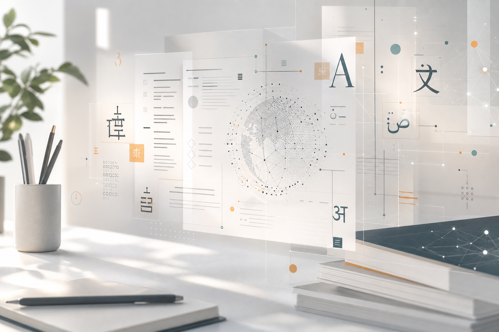

Achieving human parity on automatic Chinese to English news translation
Machine translation work from Microsoft researchers and collaborators, listed as the top-cited item on my Scholar profile.
AI systems, language technology, and learning by doing
I lead teams working at the intersection of machine learning, natural language processing, cloud services, and product experiences. My work has spanned Microsoft Copilot, Microsoft 365 AI, Translator, machine translation, and the infrastructure that turns research progress into reliable services.

About
I am an engineering and science leader at Microsoft working on AI capabilities for Copilot and Microsoft 365. My background includes leading machine translation work for Microsoft Translator and Azure Translator through several generations of AI: statistical machine translation, LSTMs, transformers, and modern LLM-based systems.
My interests sit where research quality, model training, evaluation, product design, latency, cost, and reliability meet. I care about making AI understandable enough for teams to build with it, and dependable enough for people to use it.
Research
Machine translation work from Microsoft researchers and collaborators, listed as the top-cited item on my Scholar profile.
A benchmark-style contribution for evaluating gender ambiguity in translation systems.
Earlier distributed systems research on communication-efficient data collection.
Database and sensor network work focused on reducing communication costs.
Projects
A browser-based, hands-on lesson that teaches language modeling from the ground up by building a tiny next-word predictor with tokenization, n-grams, smoothing, backoff, generation, and perplexity.
This site is set up so new projects can be added over time: essays, notebooks, demos, teaching tools, and experiments.
Links